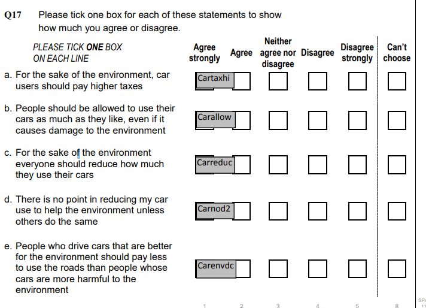

#install packages...
library(haven) ### To open Stata or SPSS datasets
library(dplyr) ### For data manipulation
library(survey) ### For survey data analysis
library(srvyr) ### For manipulation of survey dataTest: Reduce car use?

Should car users pay more tax? Should we reduce car use for the sake of the environment?
This book uses R coding to explore public attitudes. Follow the steps to create
descriptive statistics.
data visualisations (bar charts).
Set-up
Run the code below before starting the exercise, this code opens packages we need to analyse the data. The # are notes that explain the purpose of the code. Annotating code helps humans understand what is going on.
Data
The dataset is British Social Attitudes Survey, 2017, Environment and Politics: Open Access Teaching Dataset (Study number 8849). Use the code to read in the data.
BSAenviro <- read_dta("https://raw.githubusercontent.com/JenniferLB/Open_data/master/bsa2017_open_enviropol.dta") %>%
mutate(across(
c(cartaxhi, carnod2, carreduc, carallow, carenvdc),
as_factor
))Let’s explore
Let’s start by looking at the data. The code below produces a summary of the data.
dim(BSAenviro) ### how many cases and variables?[1] 3988 25names (BSAenviro) ### an ordered list of variables names [1] "Sserial" "Rsex" "RAgeCat" "Married"
[5] "ChildHh" "HEdQual3" "eq_inc_quintiles" "RClassGp"
[9] "CCBELIEV" "carallow" "carreduc" "carnod2"
[13] "cartaxhi" "carenvdc" "plnenvt" "plnuppri"
[17] "Politics" "Voted" "actchar" "actpol"
[21] "govnosa2" "PartyId2" "leftrigh" "libauth"
[25] "WtFactor" Questions
How many variables and cases?
What is the name of the 11th variable?
The 11th variable is called carreduc. What does this mean? Let’s use code to find out more.
attr(BSAenviro$carreduc,"label") # Variable labels are stored as attibutes, which we can look at. [1] "For the environment everyone should reduce how much they use cars"Attitudes towards car use and the environment
We are now going to explore attitudes towards car use and the environment. Above we encountered the variable carreduc. We are also going to examine Cartaxhi. How would we change the code below to inspect the variable label? Have a go and see.
attr(BSAenviro$carreduc,"label")[1] "For the environment everyone should reduce how much they use cars"How were these questions asked in the survey? You can check the survey Questionnairre to find out (see page 170). Or see the picture below.

Now let’s look at the responses to the questions.
table(BSAenviro$cartaxhi)
skipped agree strongly
3140 27
agree neither agree nor disagree
193 195
disagree disagree strongly
318 69
cannot choose not answered
24 22 table (BSAenviro$carreduc)
skipped agree strongly
3140 97
agree neither agree nor disagree
422 195
disagree disagree strongly
81 16
cannot choose not answered
18 19 From the tables above we get a glimpse of the data. But, we can do some improvements.
One issue to address is that survey data can include non-substantive options like “skipped”, “not answered”, or “cannot choose”. In this case, we will assign them as missing values (
NA).We can also organise the categories to reflect their ordering i.e. agree, strongly, agree etc.
The code below will do this data cleaning work for our two variables as well as other variables from the same set of questions. It is important to runt he code, before we make the tables.
clean_agreement_var <- function(x) {
var_label <- attr(x, "label") # store the label before modifying
x <- as.character(x)
x <- case_when(
x %in% c("skipped", "not answered", "cannot choose") ~ NA_character_,
TRUE ~ x
)
x <- factor(x, levels = c(
"agree strongly",
"agree",
"neither agree nor disagree",
"disagree",
"disagree strongly"
), ordered = TRUE)
attr(x, "label") <- var_label # re-attach the label
x
}BSAenviro %>%
filter(!is.na(cartaxhi)) %>%
count(cartaxhi, name = "n") %>%
mutate(percent = round(n / sum(n) * 100, 1)) %>%
knitr::kable(caption = "Attitudes toward higher car taxation (cartaxhi)")| cartaxhi | n | percent |
|---|---|---|
| skipped | 3140 | 78.7 |
| agree strongly | 27 | 0.7 |
| agree | 193 | 4.8 |
| neither agree nor disagree | 195 | 4.9 |
| disagree | 318 | 8.0 |
| disagree strongly | 69 | 1.7 |
| cannot choose | 24 | 0.6 |
| not answered | 22 | 0.6 |
BSAenviro %>%
filter(!is.na(carallow)) %>%
count(carallow, name = "n") %>%
mutate(percent = round(n / sum(n) * 100, 1)) %>%
knitr::kable()| carallow | n | percent |
|---|---|---|
| skipped | 3140 | 78.7 |
| agree strongly | 22 | 0.6 |
| agree | 175 | 4.4 |
| neither agree nor disagree | 289 | 7.2 |
| disagree | 264 | 6.6 |
| disagree strongly | 53 | 1.3 |
| cannot choose | 22 | 0.6 |
| not answered | 23 | 0.6 |